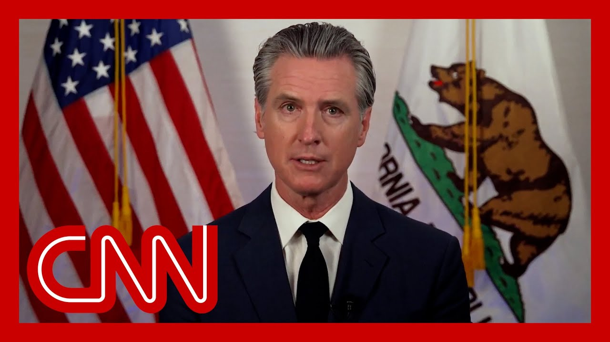

【"以软弱伪装成力量"：聆听纽瑟姆在洛杉矶持续抗议中对特朗普的激烈演讲】
Summary: California Governor Gavin Newsom delivers a scathing critique of President Trump, accusing him of undermining democracy, attacking institutions, and exploiting power while warning other states to prepare for similar threats.
摘要： 加州州长加文·纽瑟姆严厉批评特朗普总统，指责他破坏民主、攻击制度、滥用权力，并警告其他州做好应对类似威胁的准备。

⏱️ Estimated Reading Time: 16 min
📚 六级生词 📚 雅思生词 📚 托福生词 📚 专八生词 📚 SAT生词 📚 考研生词 📚 GRE生词 📚 高考生词 📚 视频里的生词
I want to go in and listen to Governor Gavin Newsom.
我想进去听听加州州长加文·纽森的讲话。
What's happening right now is very different than anything we've seen before.
目前发生的情况与我们以往所见截然不同。
On Saturday morning, when federal agents jumped out of an unmarked van near a Home Depot parking lot, they began grabbing people.
周六早晨，联邦特工从家得宝停车场附近一辆无标识的面包车跳下，开始抓人。
A deliberate targeting of a heavily Latino suburb.
这是对拉丁裔聚居郊区的蓄意针对。
A similar scene played out when a clothing company was raided downtown.
类似场景在市中心一家服装公司遭突袭时重演。
In other actions, a U.S. citizen, nine months pregnant was arrested.
另一起行动中，一名怀孕九个月的美国公民被捕。
A four year old girl. Taken.
一名四岁女孩被带走。
Families separated.
家庭被拆散。
Friends quite literally disappeared in response.
朋友们实际上就此消失。
Every day, Angelenos came out to exercise their constitutional right to free speech and assembly to protest their government's actions.
每天，洛杉矶民众行使宪法赋予的言论自由和集会权利，抗议政府行为。
In turn, the state of California and the city and county of Los Angeles sent our police officers to help keep the peace.
作为回应，加州政府及洛杉矶市县派出警力协助维持和平。
And with some exceptions, they were successful.
除个别情况外，他们取得了成功。
Like many states, California is no stranger to this sort of unrest.
与许多州一样，加州对此类骚乱并不陌生。
We manage it regularly and with our own law enforcement.
我们通常依靠自身执法力量应对。
But this again was different.
但这次又有所不同。
What then ensued was a use of flashbang grenades, rubber bullets, federal agents detaining people and undermining their due process.
随后出现的是震爆弹、橡皮子弹的使用，联邦特工拘留民众并剥夺其正当程序权利。
Donald Trump, without consulting California law enforcement leaders, commandeered 2000 of our state's National Guard members to deploy on our streets illegally and for no reason.
唐纳德·特朗普未经咨询加州执法部门负责人，就非法且无理由地强征2000名本州国民警卫队员部署街头。
This brazen abuse of power by a president inflamed a combustible situation, putting our people, our officers and even our Nation at risk.
总统如此无耻的滥权行为激化了本已易燃的局势，将民众、警员乃至国家置于危险之中。
That's when the downward spiral began.
这就是局势急转直下的开端。
He doubled down on his dangerous National Guard deployment by fanning the flames even harder.
他变本加厉地煽风点火，强化危险的国民警卫队部署。
And the president? He did it on purpose.
而这位总统？他是蓄意为之。
As the news spread throughout LA, family and friends ramped up protests.
随着消息传遍洛杉矶，亲友们加剧了抗议。
Protests started again by night.
夜间抗议再度爆发。
Several dozen lawbreakers became violent and destructive.
数十名违法者变得暴力和破坏性。
They vandalized property.
他们破坏财物。
They tried to assault police officers.
他们试图袭击警察。
Many of you have seen the video clips of cars burning on cable news.
许多人已在有线新闻上看到车辆燃烧的视频片段。
If you incite violence, I want to be clear about this.
关于煽动暴力，我要明确表态。
If you incite violence or destroy our communities, you're going to be held to account.
若你煽动暴力或破坏社区，必将被追究责任。
That kind of criminal behavior will not be tolerated.
此类犯罪行为绝不容忍。
Full stop.
句号。
Already, more than 220 people have been arrested, and we're reviewing tapes to build additional cases.
已有超过220人被捕，我们正在审查录像以追加案件。
And people will be prosecuted to the fullest extent of the law.
涉案者将受到法律最严厉的惩处。
Again, thanks to our law enforcement and the majority of Angelenos who protested peacefully, this situation was winding down and was concentrated in just a few square blocks downtown.
再次感谢执法部门及大多数和平抗议的洛杉矶市民，局势已趋缓并集中在市中心几个街区。
With that, that's not what Donald Trump wanted.
然而，这并非唐纳德·特朗普所愿。
He again chose escalation.
他再次选择升级。
He chose more force.
他选择更多武力。
He chose theatrics over public safety.
他选择作秀而非公共安全。
He federalized another 2000 guard members.
他又联邦化了2000名警卫队员。
He deployed more than 700 active Marines.
他部署了700多名现役海军陆战队员。
These are the men and women trained for foreign combat, not domestic law enforcement.
这些是受训参与境外作战而非国内执法的军人。
We honor their service.
我们尊重他们的服役。
We honor their bravery.
我们敬重他们的勇敢。
But we do not want our streets militarized by our own armed forces.
但我们不愿自己的街道被本国军队军事化。
Not in L.A., not in California, not anywhere.
不在洛杉矶，不在加州，不在任何地方。
We're seeing unmarked cars, unmarked agents in school parking lots, kids afraid of attending their own graduation.
我们看见无标识车辆、无标识特工出现在学校停车场，孩子们害怕参加自己的毕业典礼。
Trump is pulling a military dragnet all across Los Angeles, well beyond his stated intent to just go after violent and serious criminals.
特朗普在整个洛杉矶撒下军事拖网，远超出其宣称的只追捕暴力重罪犯的意图。
His agents are arresting dishwashers, gardeners, day laborers and seamstresses.
他的特工在逮捕洗碗工、园丁、临时工和缝纫工。
That's just weakness.
这就是软弱。
Weakness masquerading as strength.
以软弱伪装成力量。
Donald Trump's government is not protecting our communities.
唐纳德·特朗普的政府没有保护我们的社区。
They're traumatizing our communities.
他们在创伤化我们的社区。
And that seems to be the entire point.
而这似乎是全部目的。
California will keep fighting.
加州将继续抗争。
We'll keep fighting on behalf of our people, all of our people, including in the courts.
我们将代表全体人民继续抗争，包括通过法律途径。
Just yesterday, we filed a legal challenge to Donald Trump's reckless deployment of American troops to a major American city.
就在昨天，我们对特朗普向美国主要城市鲁莽部署军队的行为提出了法律挑战。
Today, we sought an emergency court order to stop the use of the American military to engage in law enforcement activities across Los Angeles.
今天我们申请紧急法庭禁令，要求停止美军在洛杉矶全境参与执法活动。
If some of us could be snatched off the streets without a warrant, based only on suspicion or skin color, then none of us are safe.
如果我们中有人能仅因怀疑或肤色就被无证从街头抓走，那么我们无人安全。
Authoritarian regimes begin by targeting people who are least able to defend themselves.
威权政权总是从最无力自卫的人群下手。
But they do not stop there.
但他们不会止步于此。
Trump and his loyalists thrive on division because it allows them to take more power and exert even more control.
特朗普及其追随者从分裂中获益，因为这让他们能攫取更多权力，施加更多控制。
And by the way, Trump is not opposed to lawlessness and violence as long as it serves him.
顺便说，只要对己有利，特朗普并不反对无法无天和暴力。
What more evidence do we need than January 6th?
除1月6日事件外，我们还需要什么证据？
Ask everyone to take time and reflect on this perilous moment.
请所有人花时间反思这一危险时刻。
A president who wants to be bound by no law or constitution is perpetuating a unified assault on American traditions.
这位不愿受任何法律或宪法约束的总统，正在对美国传统发动全面攻击。
This is a president who, in just over 140 days, has fired government w that could hold him accountable.
这是一位在短短140多天内就解雇了可能追究其责任的政府官员的总统。
Accountable for corruption and fraud. He's declared a war.
追究腐败和渎职的责任。他宣战了。
A war on culture, on history, on science, on knowledge itself.
一场针对文化、历史、科学乃至知识本身的战争。
Databases, quite literally, are vanishing.
数据库，毫不夸张地说，正在消失。
He's delegitimizing news organiz and he's assaulting the First Am and the threat of defunding them at threat.
他正在使新闻机构失去合法性，攻击第一修正案，并以撤销资金为威胁。
He's dictating what universities themselves can teac He's targeting law firms and the judicial branc that are the foundations of an orderly and civil society.
他规定大学可以教授什么内容，并针对作为有序文明社会基石的法律事务所和司法部门。
He's calling for a sitting gover to be arrested for no other reason than to, in his own words, for getting elected.
他呼吁逮捕一位现任州长，用他自己的话说，仅仅因为对方当选。
And we all know this Saturday he's ordering our American heroe the United States military, and forcing them to put on a vulgar display to celebrate his birthda just as other failed dictators have done in the past.
我们都知道，本周六他命令我们的美国英雄——美军，强迫他们进行粗俗的表演来庆祝他的生日，就像其他失败的独裁者过去所做的那样。
Look, this isn't just about protests here in Los Angeles.
听着，这不仅仅是关于洛杉矶的抗议活动。
When Donald Trump sought blanket authority to commandeer the National Guard he made that order apply to every state in this nation.
当唐纳德·特朗普寻求全面授权调动国民警卫队时，他将这一命令适用于全国各州。
This is about all of us.
这关乎我们所有人。
This is about you.
这关乎你。
California may be first, but it clearly will not end here Other states are next.
加州可能是第一个，但显然不会止步于此。其他州将是下一个。
Democracy is next to Ocracy is under assault before o This moment, we have feared, has He's taking a wrecking ball.
民主正受到攻击。我们一直担心的这一刻已经到来。他正在挥舞破坏之锤。
A wrecking ball to our founding historic project.
一记砸向我们历史性建国工程的破坏之锤。
Three co-equal branches of indep government are no longer any checks and bal Congress is nowhere to be found.
政府三个独立平等的分支不再有任何制衡。国会不见踪影。
Speaker Johnson has completely abdicated that responsibility.
约翰逊议长已经完全放弃了这一责任。
The rule of law has increasingly been given way to the rule of do The founding fathers, they didn't lived and died.
法治日益让位于权力统治。开国元勋们不曾为这样的时刻而生而死。
See this kind of moment? It's time for all of us to stand Justice Brandeis, he said it best in a democracy, the most important office.
看到这样的时刻了吗？现在是我们所有人站出来的时候了。布兰代斯大法官说得最好：在民主制度中，最重要的职位。
With all due respect, Mr. President, is not the presidency And it's certainly not governor.
恕我直言，总统先生，不是总统职位，当然也不是州长职位。
The most important office is Office of Citizen.
最重要的职位是公民职位。
At this moment, this moment, we all need to stan and be held to account a higher level of accountability If you exercise your First Amendment rights, please, please do it peacefully.
此时此刻，我们都需要站出来，承担更高层次的责任。如果你行使第一修正案赋予的权利，请务必和平地进行。
I know many of you are are feeling deep anxiety, stress and fear, but I want you to know that you are the antidote to tha and that anxiety.
我知道你们许多人感到深深的焦虑、压力和恐惧，但我想让你们知道，你们就是解药。
What Donald Trump wants most is your fealty, your silence to be complicit in this moment.
唐纳德·特朗普最想要的是你们的忠诚，你们的沉默，成为此刻的同谋。
Do not give in to him.
不要向他屈服。
That was a blistering speech there from the California governor, Gavin Newsom, responding after days of back and forth between his state and Los Angeles specifically, and the white House and Presiden including comments that the president has made and that if he was, his borders are he would have Governor Newsom arrested something that the gove there invoked as he was essentially referencin not only what we've been seeing play out in Los Angeles, which he was plenty critical of, including Trump bypassing the governor there to deploy the National Guard, also sending hundreds of Marines to Los Angeles.
这是加州州长加文·纽瑟姆的激烈演讲，回应了数日来加州特别是洛杉矶与白宫和总统之间的交锋，包括总统的言论，即如果他是边境官员，他会逮捕纽瑟姆州长。州长在演讲中不仅提到了我们一直在洛杉矶看到的情况——他对这些情况多有批评，包括特朗普绕过州长部署国民警卫队，还向洛杉矶派遣了数百名海军陆战队员。
He also invoked, the fact that he had implied having him arrested, the preside upcoming military parade that he's having here in Washing his fight with Harvard.
他还提到总统暗示要逮捕他，即将在华盛顿举行的军事阅兵，以及他与哈佛大学的斗争。
And he warned other states in th in that speech, that, quote, other states are ne He said that Donald Trump is not opposed to that lawlessne And he invoked what happened on January 6th.
他在演讲中警告其他州，引用他的话，"其他州将是下一个"。他说唐纳德·特朗普并不反对这种无法无天的行为。他还提到了1月6日发生的事件。
He also addressed what we've been seeing play out over the last several nights and condemned the violence and the vandalism.
他还谈到了过去几晚我们看到的情况，谴责了暴力和破坏行为。
He pointed to the hundreds of rust arrests that have played so far already in that city, and said that they are working through video and compiling additional cases as he thanked the Los Angeles Police Department for the work that it's done so far, and said it was needless to have the National Guard also deployed there.
他指出该市已经进行了数百次逮捕，并表示他们正在通过视频处理并整理更多案件。他感谢洛杉矶警察局迄今为止的工作，并表示没有必要在那里也部署国民警卫队。
Those are notable comments coming from the governor.
这些是州长发表的重要言论。
After a vicious back and forth between President Trump and Governor Newsom, as he has repeatedly criticized the job that Newsom has done, and said if it was not for him sending in the National Guard that Los Angeles would be burning to the ground.
在特朗普总统和纽瑟姆州长之间激烈的交锋之后，总统多次批评纽瑟姆的工作，并表示如果不是他派来国民警卫队，洛杉矶就会被烧成平地。
I want to bring in CNN's Priscil Alvarez back here with me, also our chief and law enforceme and intelligence analyst, John M But Scott Jennings and Kate Bedi I want to start with you, because Kate, obviously, to hear what we just did from Governor Newsom, he went far beyond just what has been happening in terms of Los Angeles and the protests there, and how the president and the white House have respond I mean, he has essentially was attacking everything that has happened over the last several months.
我想请CNN的普里西拉·阿尔瓦雷斯再次加入我们，还有我们的首席法律执法和情报分析师约翰·米勒。但斯科特·詹宁斯和凯特·贝丁，我想从你开始，凯特，显然，听到纽瑟姆州长刚才的讲话，他远远超出了洛杉矶和那里抗议活动的情况，以及总统和白宫的反应。我的意思是，他实际上是在攻击过去几个月发生的一切。
The Donald Trump has been in off he said. The moment that we feared has ar Yeah, I think he's using this moment to channel some of the en there's a faction of the Democratic base wants to see from Democratic lea I think this is the kind of thin that people who feel frustrated that the Democrats are not taking on Trump more dir This is exactly the kind of thing they want to see.
他说唐纳德·特朗普一直在...我们担心的时刻已经到来。是的，我认为他正在利用这一刻来引导民主党基层一部分人希望从民主党领导人那里看到的一些能量。我认为这正是那些对民主党没有更直接对抗特朗普感到沮丧的人想看到的事情。